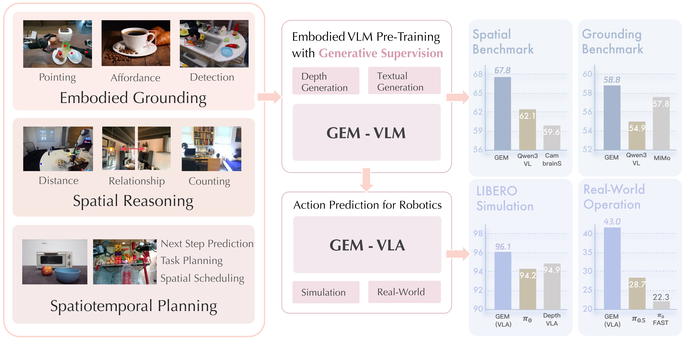
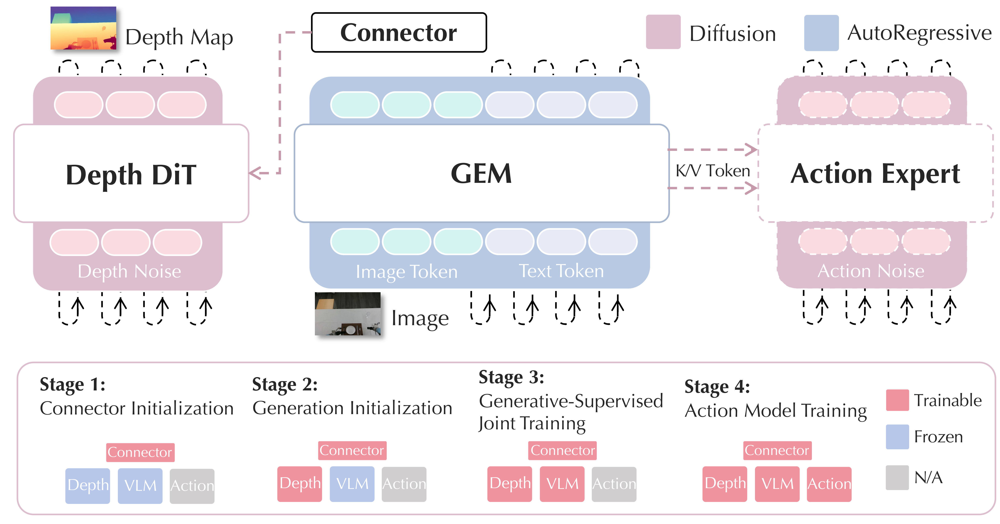

Demo video for GEM. We present GEM, a generative-supervised embodied vision-language model (VLM) that enhances semantic reasoning and physical grounding by incorporating a depth-generation objective during VLM pre-training. Built upon the GEM architecture, GEM-VLA further demonstrates strong generalization to real-world robot manipulation tasks, as shown in the video.
Embodied Vision-Language Models (VLMs) have demonstrated impressive performance and generalization in robotics, particularly within Vision-Language-Action frameworks. However, a significant gap remains between the high-level semantic focus of standard text-guided pre-training paradigms and the low-level spatial and physical knowledge critical for execution in embodied environments. In this paper, we introduce GEM, a Generative-supervised Embodied vision-language Model designed to bridge this divide. We propose integrating a depth map generation task directly into the VLM pre-training phase. By training this generative objective jointly with the main model, we observe substantial improvements in embodied intelligence, significantly enhancing both semantic understanding and physical operation capabilities. To support this paradigm, we curate and release GEM-4M, a comprehensive large-scale dataset featuring a mixture of grounding, reasoning, and planning data paired with high-quality depth supervision. Extensive experiments demonstrate that GEM achieves state-of-the-art results across diverse embodied benchmarks. Furthermore, our deployed action model, GEM-VLA, exhibits vastly superior task execution abilities in both simulation environments and real-world evaluations.

Fig1. overview of GEM. GEM is a generative-supervised embodied VLM that strengthens semantic reasoning and physical grounding by combining language modeling with an auxiliary depth-generation objective (center). Trained on the high-quality, large-scale pre-training datasets spanning diverse embodied tasks (left), GEM achieves strong performance across a wide range of embodied benchmarks. Based on the architecture of GEM, the extending GEM-VLA attains state-of-the-art success rates on LIBERO and generalizes well to real-world robot manipulation (right).

Fig2. architecture of GEM. GEM augments a VLM backbone with a DiT-based depth generator conditioned on the backbone’s final-layer visual tokens. We adopt a progressive training paradigm: (i) initialize the connector, (ii) warm up the depth generator, (iii) perform end-to-end joint training, and (iv) train an autoregressive action expert on GEM’s multimodal tokens. Building on GEM, the GEM-based VLA predicts continuous actions from these representations, improving robot manipulation.
@article{zhao2026gem,
title={GEM: Generative Supervision Helps Embodied Intelligence},
author={Zhao, Ruowen and Li, Bangguo and Liu, Zuyan and Liang, Yinan and Ye, Junliang and Liu, Fangfu and Wu, Diankun and Wang, Zhengyi and Yu, Xumin and Rao, Yongming and others},
journal={arXiv preprint arXiv:2605.28548},
year={2026}
}